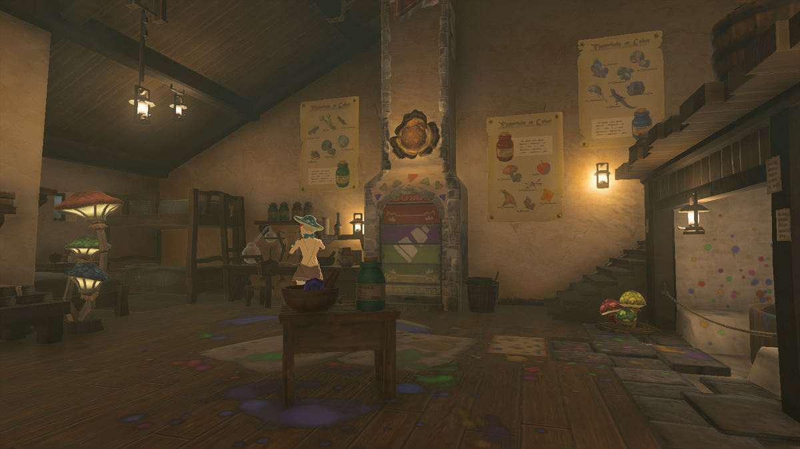
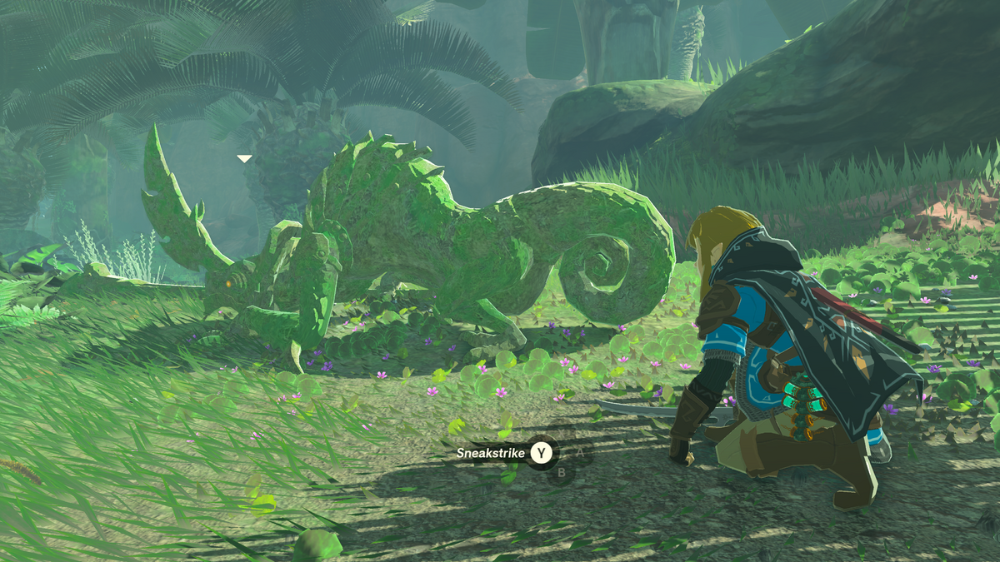

图：塞西躲在筒仓里，举着一根胡萝卜。
📑 本篇目录
先说结论：她只是在偷吃胡萝卜
塞西每天半夜 10 点准时出门，妹妹索菲娅担心姐姐在外面惹事，拜托你跟着看看。9 点左右先去服装店路对面的胡萝卜田边蹲点，10 点跟着她走到路对面的筒仓；她进去锁门后，别走正门，爬上筒仓外墙、用通天术穿过木平台、从顶部小口钻进去——她只是在里面偷吃胡萝卜和蔬菜。回去告诉索菲娅，奖励铁菇×10。
| 阶段 | 要做的事 |
|---|---|
| 接任务 | 先接下「支持塞西还是里德？」，白天去服装店门口找索菲娅 |
| 蹲点 | 晚上 9 点左右去服装店路对面的胡萝卜田边等着 |
| 跟踪 | 10 点跟着塞西走到路对面的筒仓，她进去锁门 |
| 进筒仓 | 爬外墙 + 通天术穿木平台 + 顶部小口钻进去 |
| 交任务 | 回去把调查结果告诉索菲娅，拿铁菇×10 |
接取与奖励
| 项目 | 内容 |
|---|---|
| 接取 | 村长选举线进行中：先接下「支持塞西还是里德？」，白天去服装店门口找塞西的妹妹索菲娅交谈 |
| 位置 | 哈特诺村 · 服装店门前；筒仓在服装店路对面 |
| 奖励 | 铁菇 ×10 |
| 前置任务 | 支持塞西还是里德？（须先完成） |
| 后续 | 村长选举线继续推进；做完里德的秘密后，可以参加村长选举 |
任务总览
| 顺序 | 步骤 | 要点 |
|---|---|---|
| 1 | 白天找索菲娅接任务 | 服装店门口；须先接下「支持塞西还是里德？」 |
| 2 | 晚上 9 点去路对面蹲点 | 服装店路对面的胡萝卜田边；塞西 10 点准时出门 |
| 3 | 跟着塞西到筒仓 | 蹲下、保持距离，别靠太近；她走进路对面的筒仓并锁门 |
| 4 | 爬上筒仓外墙，从顶部钻进去 | 别走正门；爬外墙 + 通天术穿木平台 + 顶部小口钻进去 |
| 5 | 回去告诉索菲娅 | 她在里面偷吃胡萝卜、蔬菜；奖励铁菇×10 |
第一步：白天找索菲娅接任务
索菲娅是塞西的妹妹，白天站在服装店门口。跟她说话：她担心姐姐塞西每天半夜偷偷出门，不知道去哪儿、干什么，拜托你跟着看看。接下任务，晚上的跟踪就交给你了。
💡 没接下「支持塞西还是里德？」就去找索菲娅？
她不会给你派这个任务。先去服装店接下选举线的第一个任务，再来找索菲娅。第二步：晚上 9 点去路对面蹲点
塞西晚上 10 点准时从店里出来，9 点左右先去服装店路对面的胡萝卜田边等着，别等到 10 点才跑过去。提前到地方蹲好，省得半路跟丢。

图：染坊——哈特诺村的店铺都集中在村子中央一带，蹲点不用跑远。
第三步：跟着塞西到筒仓
10 点一到，塞西从店里出来，一路走到路对面的筒仓，走进去把门锁上。跟着她的时候蹲下、保持距离，别靠太近；可以躲在建筑物或蘑菇招牌后面，别让她发现你。

图：蹲下潜行——跟着塞西时别靠太近，保持距离慢慢跟。
第四步：爬上筒仓外墙，从顶部钻进去
塞西把筒仓门锁上了，正面进不去。绕到筒仓外侧，爬上外墙，对准头顶的木平台用通天术穿过去，再从顶部的小口钻进去。钻进去就能看到她了：她正躲在里面偷吃胡萝卜和蔬菜。
第五步：回去告诉索菲娅
看清楚了就回去找索菲娅，她一般还在店门口，把调查结果告诉她：塞西半夜出门不是去惹事，只是在筒仓里偷吃村里的胡萝卜和蔬菜。任务完成，奖励铁菇×10。
关键信息表
| 项目 | 内容 |
|---|---|
| 接取人 | 索菲娅：塞西的妹妹，服装店门口（白天） |
| 出门时间 | 塞西晚上 10 点准时出门 |
| 蹲点时间 | 9 点左右先去服装店路对面的胡萝卜田边等着 |
| 筒仓位置 | 服装店路对面 |
| 进筒仓办法 | 爬筒仓外墙 + 通天术穿过木平台 + 从顶部小口钻进去（别走正门，她锁门了） |
| 塞西在干什么 | 躲在筒仓里偷吃胡萝卜、蔬菜 |
| 奖励 | 铁菇 ×10 |
| 前置任务 | 支持塞西还是里德？（须先完成） |
容易翻车的地方
- 没接下「支持塞西还是里德？」就去找索菲娅——她不会派任务，先去服装店接下选举线的第一个任务。
- 10 点才去蹲点——塞西 10 点准时出门，9 点左右就得先去路对面等着。
- 跟太近被她发现——蹲下、保持距离，躲在建筑物或蘑菇招牌后面。
- 走筒仓正门——她锁门了，进不去；爬外墙、通天术、从顶部小口钻进去。
- 通天术没对准木平台——先爬上筒仓外墙，对准头顶的木平台再用。
一句话总结
接下「支持塞西还是里德？」后，白天找索菲娅接任务；晚上 9 点去路对面蹲点，10 点跟着塞西到筒仓，爬外墙、通天术、从顶部钻进去——她只是在偷吃胡萝卜，回去告诉索菲娅，铁菇×10 到手。